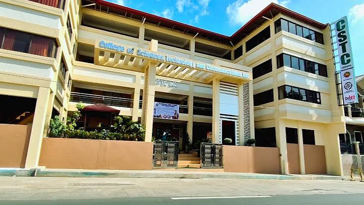

"College of Science Technology and Communication"
The College of Science, Technology and Communication or CSTC as we all know it feels less like an institution and more like a second home. It is the place where our dreams began to take shape, where we learned not just how to study, but how to believe in ourselves and what we can become. What makes CSTC truly special is the warm, welcoming atmosphere the moment you step inside. It never feels cold or intimidating. Teachers don't just stand in front of the room and talk they genuinely care about us as individuals. You can feel that they aren't teaching just to get through the day; they want us to understand, to grow, and to succeed in life beyond the classroom walls. I especially admire our IT instructors. Anyone knows that technology can be tricky there are days when nothing seems to work and you just want to give up. But our teachers? They are incredibly patient and skilled. No matter how many times we ask the same question, they explain things clearly, guide us step by step, and never make us feel silly for not understanding right away. They push us not because they demand perfection, but because they truly see our potential and want us to realize what we are capable of achieving. They believe in us even when we doubt ourselves. Beyond lessons and projects, CSTC is where we found friends who became family people who laugh with us, encourage us, and walk through this journey together. We grow not just as students, but as people. CSTC has laid the foundation for our future. It taught us that education is not just about getting high grades it is about growing into someone who is knowledgeable, skilled, and kind. I am proud to be part of this community, and grateful for every lesson, every support, and every moment spent here
Honestly, choosing CSTC for my BSIT wasn't just about picking a school — it was choosing where I wanted to build my future. And looking back, I know I made the right decision. IT isn't always easy. There are days when the code just won't work, when concepts feel overwhelming, and when I wonder if I'm really on the right track. But that's exactly why I'm grateful to be here. At CSTC, it never feels like I'm struggling alone. My instructors don't just teach us — they genuinely want us to understand. They're patient, they explain things until we get it, and they always remind us that making mistakes is just part of learning. That kind of support makes all the difference. Beyond the lessons and projects, CSTC feels like home. It's where I've met classmates who are now like family — people I can laugh with, ask for help from, and grow alongside. This school doesn't just focus on making us skilled; it helps us become better people too. I still have a long way to go, but I feel confident that I'm in the right place. CSTC isn't just where I study — it's where my dreams are being shaped, one lesson at a time. And I'm really proud to be part of that journey.
• To graduate with a degree in BSIT
• To become a skilled programmer and web developer
• To contribute to the IT industry in our community
• To inspire others who are starting their journey
Responsive Design